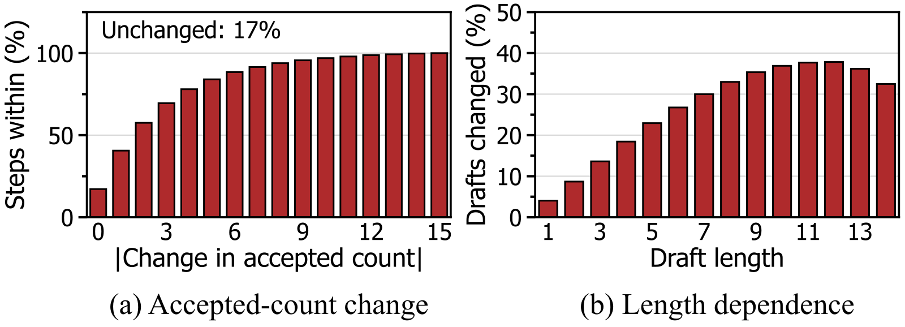
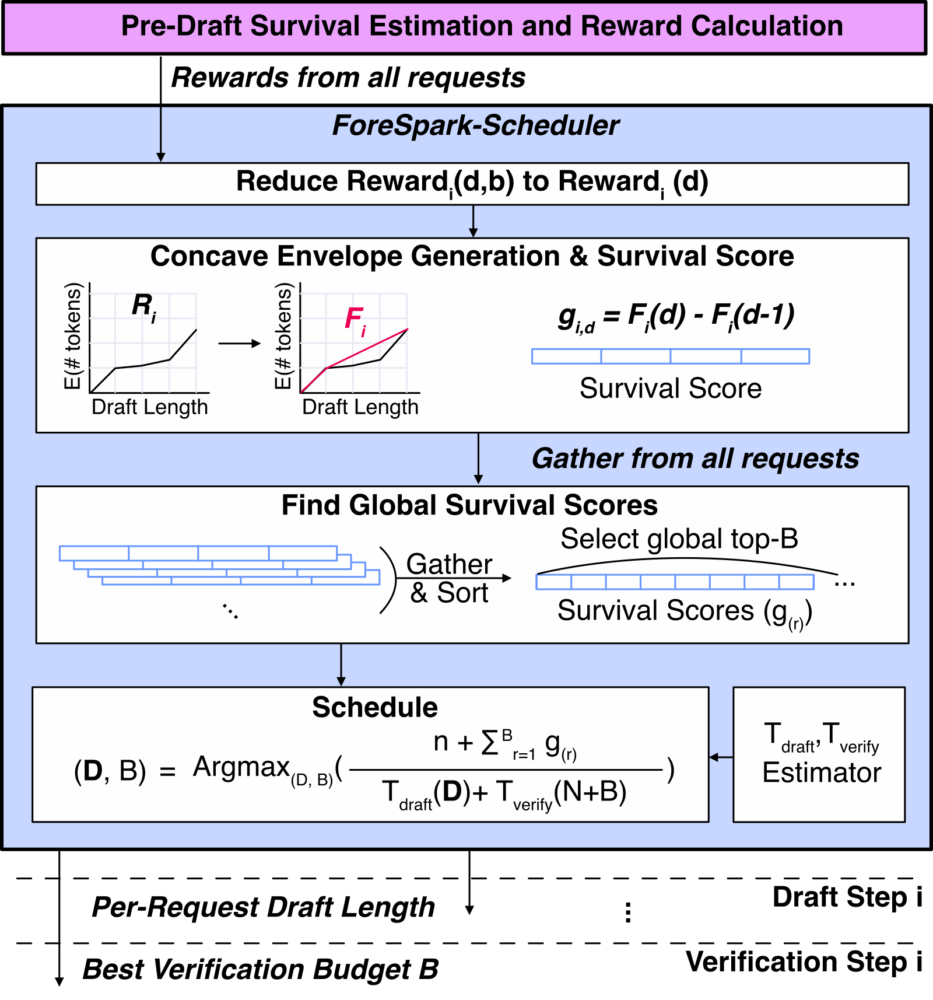

目录 · 6 节
1三个请求，同一种浪费2起草前，先用目标模型自己的状态估一张三角表3收益曲线不凹，所以先盖一层凹包络4排序之后，再给起草时间定个价5同一 checkpoint 对比，起草时间少了六成以上6增益集中在高负载，也有代价ForeSpark 这篇论文说明：高负载下，并行投机解码浪费的不是验证，而是起草，每个请求写满 15 个草稿 token，最后只验 3 到 4 个；省下这部分算力的办法，是在起草之前就决定每个请求写多长。
投机解码的做法是让一个小的 drafter 先猜后面几个 token，再让目标模型一次前向把它们全部核对一遍，接受从头开始连续猜对的那一段，再额外生成一个 token。输出分布和逐个生成完全一样，只是每步能多吐出几个 token。并行 drafter（如 DFlash2、DSpark）更进一步：它一次前向就把 K 个位置同时填满，本文默认 K=15，不像 EAGLE、MTP 那样每猜一个 token 跑一遍。
batch 一大，验证就成了瓶颈。512 个请求挤在一步里，每个请求多验一个 token，整批的这一步就慢一点；猜错的 token 等于抢了别的请求的算力。于是近期系统改为优化 goodput（每秒真正被接受的 token 数）。DSpark 的做法叫自适应验证：起草完，先给每个草稿位置估一个「从第 1 个起连续猜对到这里」的概率（下文叫生存概率），把全 batch 的生存概率放在一起排序，只验证排在前面的若干个。
问题出在验证之前。自适应验证砍掉的是验证，起草仍然是每个请求写满 15 个。论文在 Qwen3-14B、512 并发下量到：自适应验证平均每个请求只留下 15 个草稿里的 3.77 个，起草占 DSpark 每 token 时间最高 40%。也就是说，大约四分之三的草稿 token 没进入验证。

三个请求，同一种浪费
下面用一个示意 batch 贯穿全文。为了能心算，K 取 3。
| 请求（示意） | 内容 | 长度 1/2/3 的草稿预计能被接受几个 |
|---|---|---|
| 甲 | 续写一段格式固定的代码 | 0.9 / 1.6 / 2.1 |
| 乙 | 前一个词还没定、后面是一个固定短语 | 0.5 / 0.6 / 1.5 |
| 丙 | 开放式闲聊 | 0.3 / 0.4 / 0.45 |
DSpark 给三个请求都写满 3 个，一共起草 9 个 token。自适应验证看完生存概率，大概会把丙的 3 个几乎全扔掉，可丙那 3 个位置的起草算力已经花了。
最直接的补救是 vLLM 的按负载截断（下文叫 BW）：负载越高，全 batch 统一用更短的长度。设成 2，甲损失了第 3 个本来很值的 token，乙只拿到 0.6，丙仍然白写 2 个。论文的图里 BW 在几个负载点已经略胜 DSpark，但一个长度没法同时照顾甲和丙。
那就按请求定长度。难在两处。第一，并行 drafter 是一次前向填满所有位置，长度必须在这次前向之前定下，没法像 EAGLE 那样写到没把握就停。第二，前人常用「上一步接受了几个」来估这一步，这个信号很差：相邻两步的接受数在 80% 以上的情况下会变，约 40% 的情况变 3 个以上。自适应验证还把这个信号藏了起来：验证被截断后，没被验的位置会不会被接受无从知道，实际能接受多长也就看不到了。

右图还说明了另一件事：并行 drafter 在块内双向注意力，写 5 个和写 15 个的前 5 个，有 23% 左右不一样。所以 ForeSpark 不假设「短草稿就是长草稿的前缀」，而是按每个长度分别估；后文会看到，在 DFlash2 上这一步其实可以简化。
起草前，先用目标模型自己的状态估一张三角表
ForeSpark 把每一步拆成四段，论文称之为 work-conserving speculation（WCS），意思是起草和验证的算力只花在划算的地方。
| 阶段 | 输入 | 做什么 | 产出 |
|---|---|---|---|
| 起草前估计 | 刚做完的验证前向里，锚点（上一步最后确认的那个 token）处的上下文特征和它的 embedding | 一个低秩、单隐层的小网络 | 每个候选长度、每个位置的接受概率 |
| 联合调度 | 全 batch 的估计 + 离线测好的时延表 | 凹包络、全局排序、按时延挑方案 | 每个请求的草稿长度 D，全 batch 验证预算 B |
| 变长起草 | D | 所有请求打包成一个扁平 batch，各自只放 d_i 个空位 | 草稿 token |
| 起草后分配 | 草稿的隐状态 + 路径选择器特征 | 重新估生存概率，全 batch 取前 B 个 | 实际送去验证的 token |
起草前估计器不看历史，看的是目标模型此刻的上下文。它的输出是一个三角形：第 d 行对应「写 d 个」，行内第 j 个数是这种写法下第 j 个位置的条件接受概率。K=15 时一共 120 个数。乙的那张表（示意）长这样：
写 1 个：0.50 → 预计接受 0.5
写 2 个：0.40 0.50 → 0.4 + 0.2 = 0.6
写 3 个：0.70 0.71 0.60 → 0.7 + 0.5 + 0.3 ≈ 1.5每行把概率依次连乘就是生存概率，加起来就是预计接受数。论文原文的例子是生存概率 0.9、0.7、0.3，加起来 1.9。估计器只花几次矩阵-向量乘，所以能放在验证和起草之间的关键路径上。
注意乙的第三行：写 3 个时，第 1 个位置的接受概率从 0.5 升到 0.7。论文的 Figure 6 画的就是这种情况：更长的草稿可能抬高前面位置的收益，于是收益曲线不一定凹。
收益曲线不凹，所以先盖一层凹包络
有了每个请求「写 d 个预计收益 R(d)」，最朴素的做法是贪心：下一个 token 的边际收益够高就再写一个。乙每多写一个 token 的边际收益依次是 0.5、0.1、0.9。如果门槛是 0.3，贪心写 1 个就停，因为第 2 个只多 0.1，所以错过了写满 3 个才有的 1.5。
ForeSpark 把每条 R 换成它的凹包络 F：盖在折线上方、边际收益逐个不增的最小折线。乙的 R 是 0、0.5、0.6、1.5，从原点连到 (3, 1.5) 的直线已经盖住中间两点，所以 F 是 0、0.5、1.0、1.5，每个 token 的边际收益（论文叫生存分 g）都是 0.5。第 3 个 token 才有的大收益被摊平到中间的 token 上，选择就不会过早停下。甲本来就凹，包络不变，g 是 0.9、0.7、0.5；丙的 g 是 0.3、0.1、0.05。
接下来把全 batch 的 g 一起排序：
0.9(甲1) 0.7(甲2) 0.5(甲3) 0.5(乙1) 0.5(乙2) 0.5(乙3) | 0.3(丙1) 0.1(丙2) 0.05(丙3)因为每个请求的 g 单调不增，排在前面的永远是每个请求的一段前缀，取前 6 个直接得到 D=(3, 3, 0)。不用搜 3³ 种组合，K=15、几百个请求时也只是一次排序。这只是一种近似，论文在真实 batch 上测得这样选与穷举最优平均差在 0.01% 以内。

排序之后，再给起草时间定个价
排好序还没决定切在哪里。DSpark 选验证预算时把起草时间当常数；ForeSpark 把它变成变量，选使下面这个比值最大的 D 和 B：
D 决定哪些分数能参与排序：每个请求只有被安排起草的前 d_i 个位置有分数，这些分数在起草前由预测器估出。B 是在这些位置里按分数取前 B 个去验证，所以 B 不能超过 ΣD。分子是每个请求保底的 1 个 token 加上这前 B 个分数，分母是离线测好的起草时延加验证时延，N 是非投机 token 数。负载高时每多写一个 token 都拖慢整批，切点往前移，起草就紧；负载低时多写几乎不花钱，切点往后，起草就宽。全块起草加自适应验证正是这个空间里的一种方案，所以低负载下 ForeSpark 不会比 DSpark 差太多。 Hoot 说

示意：沿用正文甲、乙、丙的 g 排序，n=3，起草和验证都取前 x 个分数（不多写），每步时延按 1 + c·x 算。高负载 c=0.2 时比值在前 2 个处最大（约 3.29），只给甲写 2 个；低负载 c=0.1 时在前 6 个处最大（约 4.1），正好是 D=(3, 3, 0)。注意 g 不是真实的逐位生存概率：乙前 2 个的 g 之和是 1.0，而写 3 个、验前 2 个的预期接受数约 1.2，写 2 个的 R(2) 是 0.6。g 只是凹包络摊平后的规划分数。所以在正文多写一点的示意里（甲、乙都写 3 个，B=4），验哪 4 个由起草后估计重挑：按 g，甲的第 3 个（0.5）和乙的位置并列，分不出来；按起草后的估计，甲第 3 个只有 0.4，乙第 2 个是 0.5，于是验的是甲、乙各前 2 个。
出处
论文 §4.3 联合调度（式 4：前 B 个 g 之和除以起草加验证时延，B 不超过 ΣD，可多写）；§4.4 起草后估计与预算分配（验证全 batch 起草后生存概率最高的 B 个位置）；图 6B 允许小于 ΣD，也就是故意多写一点，留给起草后的估计器按真实写出来的 token 重新挑。示意：起草便宜时调度器让甲、乙都写 3 个，但只给 B=4。写完后，起草后估计器用每个位置的隐状态和 DFlash2 路径选择器的特征重新估生存概率，比如甲是 0.95、0.8、0.4，乙是 0.7、0.5、0.45，全 batch 取前 4 个，就是甲、乙各验前 2 个。起草前估计器只能凭上下文猜，起草后估计器看到了真实的草稿，这就是多写一点有用的原因。验证仍是标准的投机采样，输出分布不变。
搜索之所以便宜，是因为 drafter 和目标模型都按 token 数分几个桶回放 CUDA graph，同一个桶里时延不变，每对桶只需看一个候选。
同一 checkpoint 对比，起草时间少了六成以上
实验在 vLLM 上做，模型是稠密的 Qwen3-14B，以及两个 MoE 模型 GLM5.3-Flash（320B，18B 激活）和 GLM5.3（744B，40B 激活），在相同单用户速度下比总吞吐。对照组有：AR（不投机）；DFlash2（写满、全验）；BW；DSpark；以及 ForeSpark w/o JS（JS 指联合调度），它用 ForeSpark 同一个 checkpoint，去掉起草前估计和联合调度，退回写满加自适应验证。最后这个对照最关键，因为 ForeSpark 的 drafter 基于 DFlash2，和 DSpark 本来就不是同一个骨干。
在只看解码阶段的 ShareGPT-Decode 上，ForeSpark 的吞吐最高是 DSpark 的 1.77/1.40/1.34 倍（三个模型依次），是 w/o JS 的 1.37/1.46/1.46 倍。这说明收益主要不是换了骨干：同一个 checkpoint，只加联合调度，就有 1.4 倍上下的提升。
时间拆分把账算得更直接。最大 batch 下，ForeSpark 的起草时间比 w/o JS 少 62/70/76%，比 DSpark 少 76/68/67%。Qwen3-14B 上，DSpark 和 w/o JS 每 token 耗时分别是 AR 的 1.41 倍和 1.14 倍，ForeSpark 是 0.89 倍。这说明省下的主要是起草时间：同一个 checkpoint，联合调度让每 token 耗时从比 AR 慢变成比 AR 快。
调度器本身也要够快。GLM5.3-Flash 上，192 个请求时 ForeSpark 做一次决策 88 μs，同样输入的穷举调度器要 8.2 ms；穷举在 batch 64 和 192 时的吞吐反而低于只做自适应验证的版本（即 w/o JS）。这说明联合调度的收益建立在「便宜」上，算得最准但慢的调度器会把收益吃回去。
估计器也确实比看历史准。在 148 万个写满的草稿上，ForeSpark 有 60% 的草稿预测接受长度误差在 1 个 token 以内，用上一步接受数只有 41%。在延迟 SLO 约束下，ForeSpark 能承受的请求率最高是 DSpark 的 1.51 倍。
增益集中在高负载，也有代价
收益基本来自高负载。batch 为 1 时，ForeSpark 的单用户速度是 DSpark 的 0.96 到 1.15 倍，基本持平。端到端负载（ShareGPT-E2E）上增益小一些，因为 prefill token 和解码挤在同一步里，这部分不投机的 token 调度不掉。Qwen3-14B 的 Decode 负载在最重那一档，吞吐最高的仍是 AR，ForeSpark 只是投机方法里最接近 AR 的。
增益也不是 drafter 更强带来的：不开自适应验证时，三个模型上的平均接受长度与 DSpark 差在 3.2% 以内，与 DFlash2 相同，两个估计器只多 0.1% 到 0.2% 的参数。另一个反直觉的结果是，在 DFlash2 上，用一条长度 15 的曲线代替逐长度估计（论文叫 ForeSpark-SC），预测同样准，吞吐也持平。也就是说，逐长度估计在这个 drafter 上不是必需的，作者保留它是为了在「短草稿是长草稿前缀」不成立的 drafter 上也能用。
回到示意例子里的丙：全局排序可能让它这一步一个草稿都没有。输出不受影响，但不同请求的加速会不均匀，作者提议用每请求最低预算来补。另外两个估计器相对知道真实接受数的 oracle 都偏保守，部分原因是只在 Alpaca 上校准。
回到开头那笔账：并行 drafter 的长度不能边写边改，ForeSpark 就把决定提前到起草之前，用目标模型当下的状态估每个长度的收益，再把全 batch 的长度和验证预算放进一次排序里一起定。1.77 倍是相对 DSpark，里面也含骨干不同的影响；同一个 checkpoint 下，联合调度单独带来的是 1.37/1.46/1.46 倍。
读完这篇，你觉得
夜读鸮记下了，谢谢你的反馈。
点一下即可，无需登录；再点一次撤回。只统计匿名次数，不记录你是谁。
相关论文RELATED
 Infra · 2026-11-02TableTune: Measured, Self-Correcting Draft-Length Tables for Dynamic Speculative DecodingvLLM 文档里那张按批大小决定投机解码每步猜几个 token 的配置表，换一种 GPU 或模型就可能明显拖慢吞吐；这篇论文给出一个几分钟就能把最优表实测出来、上线后还能随流量自动修正的工具。投机解码只在 GPU 还有空闲算力时才划算：同一批里的请求越多，每步该猜的 token 就该越少。TableTune 在 vLLM 自己的服务路径上把每种批大小、每种猜测长度都实测一遍，算出吞吐最高的表。上线后，插件读取 vLLM 记录的猜中次数，结合测好的单步耗时，重算每种批大小下每秒能产出多少有效 token，挑最高的长度重写这张表。在一个 MoE 模型上，以每种负载下最快的固定猜测长度为基准，文档里的表最多慢 18%，实测表最多慢 3%。
Infra · 2026-11-02TableTune: Measured, Self-Correcting Draft-Length Tables for Dynamic Speculative DecodingvLLM 文档里那张按批大小决定投机解码每步猜几个 token 的配置表，换一种 GPU 或模型就可能明显拖慢吞吐；这篇论文给出一个几分钟就能把最优表实测出来、上线后还能随流量自动修正的工具。投机解码只在 GPU 还有空闲算力时才划算：同一批里的请求越多，每步该猜的 token 就该越少。TableTune 在 vLLM 自己的服务路径上把每种批大小、每种猜测长度都实测一遍，算出吞吐最高的表。上线后，插件读取 vLLM 记录的猜中次数，结合测好的单步耗时，重算每种批大小下每秒能产出多少有效 token，挑最高的长度重写这张表。在一个 MoE 模型上，以每种负载下最快的固定猜测长度为基准，文档里的表最多慢 18%，实测表最多慢 3%。 Infra · 2026-11-13Multi-Future Drafting: Mixture Block Drafters for Tree-Verified Speculative Decoding投机解码里，一次前向就起草一整块 token 的草稿模型很快，但它给每个位置单独一个分布。后文有两种同样合理的措辞时，按各位置概率连乘排出的草稿树会把两种说法拼成目标模型根本不会说的句子。作者证明，这类树想同时放下两种说法，就必须给它们的拼接也分预算，草稿模型训得再好也绕不开，因为连乘本身表达不了位置之间的关联。实测 64 个节点的树里约三成节点是这种拼接。MFD 在草稿模型输入端加 K 个可学习的模式向量，同一次前向里并行起草 K 条各自连贯的续写，再合成一棵树交给目标模型验证，输出分布不变。在四个 Qwen 目标模型上，它比同样训练的单模式树快 5% 到 8%。
Infra · 2026-11-13Multi-Future Drafting: Mixture Block Drafters for Tree-Verified Speculative Decoding投机解码里，一次前向就起草一整块 token 的草稿模型很快，但它给每个位置单独一个分布。后文有两种同样合理的措辞时，按各位置概率连乘排出的草稿树会把两种说法拼成目标模型根本不会说的句子。作者证明，这类树想同时放下两种说法，就必须给它们的拼接也分预算，草稿模型训得再好也绕不开，因为连乘本身表达不了位置之间的关联。实测 64 个节点的树里约三成节点是这种拼接。MFD 在草稿模型输入端加 K 个可学习的模式向量，同一次前向里并行起草 K 条各自连贯的续写，再合成一棵树交给目标模型验证，输出分布不变。在四个 Qwen 目标模型上，它比同样训练的单模式树快 5% 到 8%。 Infra · 2026-11-05HybridSpec: Throughput-Aware Speculative Decoding for Hybrid GDN-MoE Models给混合了 Gated DeltaNet（GDN，带循环状态的线性注意力层）和 MoE 的模型做投机解码，每轮验证几个草稿 token 不能照搬稠密模型的设定。在一个 Qwen 混合模型上，一轮验证的 token 数从 4 加到 16，验证耗时涨了 71%。HybridSpec 每一轮给每个可选长度打分：按草稿置信度估出的预计产出 token 数，减去这段验证耗时按平均速度本可产出的 token 数。目标模型跑到第一个 MoE 路由器时，再看多验一个 token 会多用几个新专家，把这部分耗时算进得分，划算才多验。在三个这类模型上，同用 DFlash 出草稿，速度是每轮验满的原版 DFlash 的 1.3 倍左右。
Infra · 2026-11-05HybridSpec: Throughput-Aware Speculative Decoding for Hybrid GDN-MoE Models给混合了 Gated DeltaNet（GDN，带循环状态的线性注意力层）和 MoE 的模型做投机解码，每轮验证几个草稿 token 不能照搬稠密模型的设定。在一个 Qwen 混合模型上，一轮验证的 token 数从 4 加到 16，验证耗时涨了 71%。HybridSpec 每一轮给每个可选长度打分：按草稿置信度估出的预计产出 token 数，减去这段验证耗时按平均速度本可产出的 token 数。目标模型跑到第一个 MoE 路由器时，再看多验一个 token 会多用几个新专家，把这部分耗时算进得分，划算才多验。在三个这类模型上，同用 DFlash 出草稿，速度是每轮验满的原版 DFlash 的 1.3 倍左右。 Infra · 2026-10-27NgramRL: Accelerating RL Post-Training for Structured Generation via Rollout-Aware N-gram Speculative Decoding大模型强化学习后训练里，生成回答常常占到训练时间的七成以上。这篇论文注意到，同一道题在前几轮训练中生成过的回答很像这一轮要生成的内容，可以直接拿来当草稿。他们提出 NgramRL，每道题只用自己最近几次的回答建一个 n-gram 草稿表。生成时拿当前回答的最后几个词去表里查，把表中接在后面的内容当草稿，大模型一次验证多个 token，不需要额外的草稿模型，也不占 GPU 显存，生成结果的分布也不变。在推理和结构化生成任务上，缓存预热后大模型每次前向能确认 3.6 到 7.8 个 token，最多是 SuffixDecoding 的 2 倍，后者是用全局历史回答建后缀树查草稿的同类方法。
Infra · 2026-10-27NgramRL: Accelerating RL Post-Training for Structured Generation via Rollout-Aware N-gram Speculative Decoding大模型强化学习后训练里，生成回答常常占到训练时间的七成以上。这篇论文注意到，同一道题在前几轮训练中生成过的回答很像这一轮要生成的内容，可以直接拿来当草稿。他们提出 NgramRL，每道题只用自己最近几次的回答建一个 n-gram 草稿表。生成时拿当前回答的最后几个词去表里查，把表中接在后面的内容当草稿，大模型一次验证多个 token，不需要额外的草稿模型，也不占 GPU 显存，生成结果的分布也不变。在推理和结构化生成任务上，缓存预热后大模型每次前向能确认 3.6 到 7.8 个 token，最多是 SuffixDecoding 的 2 倍，后者是用全局历史回答建后缀树查草稿的同类方法。 Infra · 2026-10-23RCSD: Reinforcement and Continual Learning for Domain-Specific Speculative Decoding海信的 RCSD 在用 HASS 蒸馏训好的投机解码草稿模型上，再用 DPO 或 GRPO 继续训练：目标模型自己生成的序列为"好"，目标与草稿交替生成的序列为"差"，GRPO 版用接受率打分。Qwen3-1.7B 和 Llama-3.1-8B 上，四个数据集、草稿步数 3–6 的接受长度都高于 HASS，例如 Qwen3-1.7B 在 GSM8K、步数 6 时从 2.176 到 3.246；Llama-3.1-8B 在 ShareGPT 上吞吐从 142.3 到 176.6 token/s。论文没有给出生成质量评测。
Infra · 2026-10-23RCSD: Reinforcement and Continual Learning for Domain-Specific Speculative Decoding海信的 RCSD 在用 HASS 蒸馏训好的投机解码草稿模型上，再用 DPO 或 GRPO 继续训练：目标模型自己生成的序列为"好"，目标与草稿交替生成的序列为"差"，GRPO 版用接受率打分。Qwen3-1.7B 和 Llama-3.1-8B 上，四个数据集、草稿步数 3–6 的接受长度都高于 HASS，例如 Qwen3-1.7B 在 GSM8K、步数 6 时从 2.176 到 3.246；Llama-3.1-8B 在 ShareGPT 上吞吐从 142.3 到 176.6 token/s。论文没有给出生成质量评测。 Infra · 2026-11-04Fairway: Load-Aware KV Cache Reuse for LLM Prefill Scheduling前缀缓存下的 prefill 排队，可以同时做到中位延迟低、长尾也短：队列短时优先跑命中多的便宜请求，一个请求等得越久（和它自己的 prefill 时长相比）就排得越靠前，同时限制便宜请求最多能插到最老请求前面多少计算量。这就是 Fairway 的做法。agent 和 RAG 的请求常共用一段前缀，同一队列里各请求剩下的计算量能差上百倍，先跑谁就决定了每个请求等多久才出第一个 token。在流量尖峰里，Fairway 的中位首 token 延迟是 0.82 秒，p99 接近先来先服务；偏向命中的排法 p99 则到了 11 到 50 秒。
Infra · 2026-11-04Fairway: Load-Aware KV Cache Reuse for LLM Prefill Scheduling前缀缓存下的 prefill 排队，可以同时做到中位延迟低、长尾也短：队列短时优先跑命中多的便宜请求，一个请求等得越久（和它自己的 prefill 时长相比）就排得越靠前，同时限制便宜请求最多能插到最老请求前面多少计算量。这就是 Fairway 的做法。agent 和 RAG 的请求常共用一段前缀，同一队列里各请求剩下的计算量能差上百倍，先跑谁就决定了每个请求等多久才出第一个 token。在流量尖峰里，Fairway 的中位首 token 延迟是 0.82 秒，p99 接近先来先服务；偏向命中的排法 p99 则到了 11 到 50 秒。 Infra · 2026-11-03LEAP: Efficient LLM Inference Scheduling with Generalizable Length Prediction让短请求先跑能明显降低平均延迟，前提是提前知道每个请求大概要生成多长，而现有的长度预测器换个领域排序就会变差，本身还要占 GPU。LEAP 发现，服务模型做 prefill 时算出的隐藏状态里已经带着输出长度的信号，在一层隐藏状态上接一个线性层就能读出来，不用另跑一个编码器。这个线性层放在 CPU 上算，和 GPU 上剩下的 prefill 同时进行，不占 GPU。每个请求结束后，LEAP 用递推最小二乘法拿这条请求的真实长度按公式直接修正线性层权重，不用算梯度，也不用回放旧数据。在 ShareGPT 流量的单卡实验里，平均每个 token 的延迟比几种现有预测器低 15.9% 到 40.8%。长度预测好不好，要看调度后的延迟和预测本身的成本。
Infra · 2026-11-03LEAP: Efficient LLM Inference Scheduling with Generalizable Length Prediction让短请求先跑能明显降低平均延迟，前提是提前知道每个请求大概要生成多长，而现有的长度预测器换个领域排序就会变差，本身还要占 GPU。LEAP 发现，服务模型做 prefill 时算出的隐藏状态里已经带着输出长度的信号，在一层隐藏状态上接一个线性层就能读出来，不用另跑一个编码器。这个线性层放在 CPU 上算，和 GPU 上剩下的 prefill 同时进行，不占 GPU。每个请求结束后，LEAP 用递推最小二乘法拿这条请求的真实长度按公式直接修正线性层权重，不用算梯度，也不用回放旧数据。在 ShareGPT 流量的单卡实验里，平均每个 token 的延迟比几种现有预测器低 15.9% 到 40.8%。长度预测好不好，要看调度后的延迟和预测本身的成本。 Infra · 2026-11-12One-Sided Expert-Parallel All-to-All for Mixture-of-Experts Inference over NVLinkMoE 推理时每一层都要做两次 all-to-all：先把 token 发到持有对应专家的 GPU，再把专家的输出收回来。推理时每张卡一次只处理很少的 token，这时耗时的不是搬数据，而是 GPU 之间互相等待、同步这类固定开销：数据量小到在 NVLink 上几乎瞬间传完，一来一回却要几十微秒。NVLinkOneSided 让每张卡只凭自己的路由结果，直接把 token 写进目标卡上专门留给它的那块缓冲区，不用先交换 token 数量之类的信息；后面的分组 GEMM 也直接从这块缓冲区读，不再按专家重新复制一遍。在 Blackwell GPU 上，发送加回收比 DeepEP 快 1.2 到 3.0 倍，batch 越小优势越大。整层 MoE 在每卡 128 个 token 以内，比融合成一个 kernel 的 DeepGEMM MegaMoE 还快。小 batch 的 decode 通…
Infra · 2026-11-12One-Sided Expert-Parallel All-to-All for Mixture-of-Experts Inference over NVLinkMoE 推理时每一层都要做两次 all-to-all：先把 token 发到持有对应专家的 GPU，再把专家的输出收回来。推理时每张卡一次只处理很少的 token，这时耗时的不是搬数据，而是 GPU 之间互相等待、同步这类固定开销：数据量小到在 NVLink 上几乎瞬间传完，一来一回却要几十微秒。NVLinkOneSided 让每张卡只凭自己的路由结果，直接把 token 写进目标卡上专门留给它的那块缓冲区，不用先交换 token 数量之类的信息；后面的分组 GEMM 也直接从这块缓冲区读，不再按专家重新复制一遍。在 Blackwell GPU 上，发送加回收比 DeepEP 快 1.2 到 3.0 倍，batch 越小优势越大。整层 MoE 在每卡 128 个 token 以内，比融合成一个 kernel 的 DeepGEMM MegaMoE 还快。小 batch 的 decode 通…
讨论
欢迎补充实验细节、复现经验或不同看法。需 GitHub 登录。
正在加载讨论…